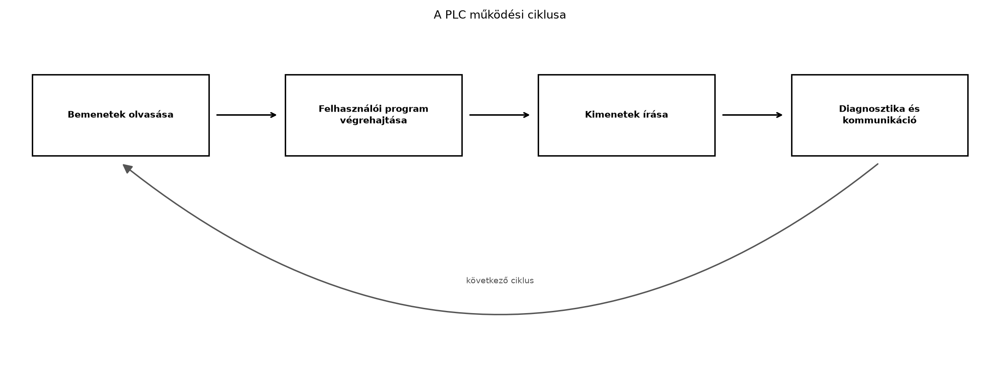

A hagyományos relés motorvezérlés – direktindítás, önfenntartás, reverzálás, csillag–delta – jól működik, amíg a vezérlési logika rögzített. Amint a megrendelő azt kéri, hogy a szivattyú csak akkor induljon, ha a tartály szintje alacsony, a nyomás megfelelő, a vészleállító nincs benyomva, és egy kézi kapcsoló is engedélyez, a relés huzalozás gyorsan áttekinthetetlenné válik. Minden új feltétel új relét, új segédérintkezőt és új vezetéket jelent. A módosítás pedig a kapcsolószekrény átszerelésével jár.
A programozható logikai vezérlő (PLC) ezt a problémát oldja meg: a logikát nem vezetékek, hanem program tárolja. Ugyanaz a hardver más programmal más feladatot lát el, a módosítás pedig gyakran csak a program átírása. A PLC ezért ma már a motorvezérlések és az ipari elosztóberendezések alapvető eleme.
Továbbvitt eredmény. A PLC-s vezérlés itt megismert felépítése, a be- és kimenetek kezelése, valamint a vészleállító független bekötésének elve közvetlenül szükséges a frekvenciaváltók és lágyindítók vezérlésének megértéséhez a Motorvédelmek, lágyindítók és frekvenciaváltók az elosztóban alfejezetben.
Vegyünk egy egyszerű direktindítást önfenntartással. A hagyományos kapcsolásban a Start nyomógomb (NO) és a Stop nyomógomb (NC) sorban van a K1 mágneskapcsoló tekercsével, és a K1 segédérintkező (NO) párhuzamosan a Start gombbal biztosítja az önfenntartást. Ez a kapcsolás a Direktindítás, önfenntartás és kezelőszervek alfejezetből már ismert.
Ugyanezt PLC-vel úgy valósítjuk meg, hogy a Start és Stop gombokat a PLC bemeneteire kötjük, a K1 tekercset pedig a PLC egyik kimenetére. A programban egy „öntartó” logikai ágat hozunk létre: ha a Start bemenet aktív, vagy a K1 kimenet már aktív, és a Stop nincs benyomva, akkor a K1 kimenet aktív marad. A kapcsolás logikája ugyanaz, csak a kapcsolást nem vezetékek, hanem a program utasításai valósítják meg.
A létradiagram bal oldali függőleges vonala a bal oldali (jelvezető) sín, a jobb oldali a visszatérő sín. A felső ágban a Start gomb (S1) NO kontaktusa, a Stop gomb (S0, hardveresen NC jeladó, ezért a programban NO kontaktussal vizsgálva) és a K1 kimenet (tekercs) van sorosan. Itt a K1 a mágneskapcsolót vezérlő PLC-kimenet neve; az alfejezet későbbi kidolgozott példájában (direktindítás PLC-vel) ugyanez a kimenet a DO0 címet kapja. Az alsó ágban a K1 kimenet saját NO kontaktusa (tartóérintkező) párhuzamosan kapcsolódik a Start gombbal: ha a K1 kimenet bekapcsolt, a Start elengedése után is tartja magát. A HTML-kiadás interaktív változatában a gombok lenyomhatók, és lépésenként követhető, melyik ágon halad a jel.
Definíció. A programozható logikai vezérlő (PLC, Programmable Logic Controller) olyan ipari számítógép, amely bemenetein érzékeli a folyamat állapotát (nyomógombok, érzékelők), a tárolt program szerint logikai döntéseket hoz, és kimenetein vezérli a beavatkozókat (mágneskapcsolók, szelepek, jelzőlámpák).
A PLC fő részei: - Központi egység (CPU): a programot tárolja és végrehajtja. - Bemeneti egység (input, I): a külső jeleket fogadja, galvanikusan leválasztja és a CPU számára értelmezhető jelszintre alakítja. - Kimeneti egység (output, O): a CPU döntéseit a külső áramkörök felé kapcsolja (relé, tranzisztor vagy triak kimenet). - Tápegység: a belső elektronika számára stabil feszültséget állít elő. - Kommunikációs interfész: programozáshoz, felügyelethez, más készülékekkel való adatcseréhez.
A PLC nem folyamatosan, hanem ciklikusan dolgozik. A ciklus lépései:

Szabály. A ciklusidő jellemzően 1–20 ms, de ez a program hosszától és a készülék típusától függ. A gyakorlatban ez azt jelenti, hogy a PLC „észreveszi” a bemeneti változást, végrehajtja a logikát, és a kimeneten legrosszabb esetben kb. két ciklusidő (és a be-/kimeneti modul késleltetése) után jelenik meg a változás. A motorvezérléseknél ez a késés általában elhanyagolható, de nagyon gyors folyamatoknál (pl. pozícióvezérlés) már számít.
Digitális bemenet (DI): csak két állapotot érzékel: aktív (logikai 1) vagy inaktív (logikai 0). A bemenet tipikusan 24 V DC feszültségszintet vár, és a bemeneti áram néhány mA. Például egy egyszerűsített modellben (a valódi digitális bemenet nem egyszerű ellenállás, a 4,7 kΩ modellérték; ellenőrizendő: gyártói adatlap), ha a bemeneti ellenállás 4,7 kΩ, akkor a bemeneti áram:
A digitális bemenetre nyomógombot, végálláskapcsolót, reléérintkezőt, közelítésérzékelőt köthetünk.
Digitális kimenet (DO): két állapota van: be (vezet) vagy ki (szakad). A kimenet lehet: - relés kimenet: galvanikusan leválasztott, egyaránt kapcsolhat egyen- és váltakozó feszültséget, de lassabb (jellemzően 10 ms) és korlátozott az élettartama; - tranzisztoros kimenet: csak egyenfeszültséget kapcsol, gyors (jellemzően < 1 ms), nincs mechanikus kopás; - triakos kimenet: váltakozó feszültséget kapcsol, gyors, de terhelésfüggő.
A motorvezérlésekben a PLC kimenet jellemzően egy segédrelét vagy közvetlenül a mágneskapcsoló 24 V DC tekercsét vezérli. A relés kimenet névleges árama tipikusan 2 A, ezért közvetlenül nagyobb terhelést (pl. 230 V-os mágneskapcsoló tekercs) általában csak akkor kapcsolhat, ha az áram a határon belül van – ellenkező esetben segédrelét kell közbeiktatni. A pontos terhelhetőséget mindig a gyártói adatlap adja meg (ellenőrizendő: gyártói adatlap).
Analóg bemenet (AI): folytonos jelet fogad, például 0–10 V feszültséget, 0(4)–20 mA áramjelet, vagy ellenállás-hőmérő (Pt100) jelét. A PLC ezt a jelet digitális számmá alakítja (például 0–10 V → 0–27648). Analóg bemenetre hőmérséklet-, nyomás-, szint- vagy áramlásérzékelőt kötünk. A motorvezérléseknél analóg bemenet használható például frekvenciaváltó alapjelének vagy hőmérséklet-felügyeletnek.
Analóg kimenet (AO): folytonos jelet ad ki, például 0–10 V vagy 4–20 mA. Ezzel lehet egy frekvenciaváltó fordulatszám-alapjelét vezérelni.
Szabály. A leggyakoribb ipari jelszint a 24 V DC, ezért a PLC bemenetei és a vezérlési körök is ezen a feszültségen működnek. A 24 V DC törpefeszültség az áramütés szempontjából kisebb kockázatú, mint a 230 V AC, de zárlatra és vezetékezési hibákra itt is gondolni kell, és a tápellátást túláramvédelemmel kell ellátni.
Figyelem. Az analóg bemenet típusát a hardverkonfigurációban be kell állítani (feszültség vagy áram mód). Ha 4–20 mA-es érzékelőt kötünk 0–10 V-os bemenetre, a jel értelmezhetetlen lesz, és a bemenet károsodhat.
A PLC programozásának egyik legelterjedtebb grafikus nyelve a létradiagram (ladder diagram, LD). A létradiagram a relés kapcsolási rajz logikáját követi: bal oldalon a „feszültség alatti” sín, jobb oldalon a „nulla” sín, közöttük vízszintes lépcsőfokok sorakoznak.
Definíció. A létradiagram elemei: - Érintkező (kontaktus): egy bemenet vagy segédváltozó állapotát vizsgálja. A NO (záró) érintkező akkor vezet, ha a hozzárendelt változó logikai 1; a NC (bontó) érintkező akkor vezet, ha a változó logikai 0. Figyelem. A hardveresen bontó (NC) Stop-gomb nyugalomban 1-et ad a bemenetre, ezért a programban záró (NO) kontaktussal vizsgáljuk; így huzalszakadáskor is leáll a motor. - Tekercs (coil): egy kimenetet vagy segédváltozót állít be. Ha a tekercshez vezető ág vezet (a bal síntől a jobb sínig), a tekercs logikai 1 lesz, ellenkező esetben 0. - Önfenntartás: a tekercshez rendelt segédérintkezőt párhuzamosan kapcsoljuk a Start feltétellel, így a bekapcsolás után a tekercs tartja magát.
A direktindítás PLC-s létradiagramja az alábbi sorokat tartalmazza:
1. sor (öntartó indítás): - Start gomb (S1) NO érintkező - Vele párhuzamosan K1 segédérintkező (NO) – ez a tartóáramkör - Sorosan a Stop gomb (S0) kontaktusa: a gomb hardveresen NC, nyugalomban 1-et ad a bemenetre, ezért a programban NO (záró) kontaktussal vizsgáljuk; így huzalszakadáskor is leáll a motor - Sorosan a vészleállító (S2) kontaktusa, ugyanígy NO kontaktus (opcionálisan itt is feltüntethető, de a vészleállító hardveresen is bontja a kimenetet) - A sor végén K1 tekercs
2. sor (vészleállító felügyelet): - A vészleállító állapotát egy bemenet figyeli, és a programban tiltja a K1 bekapcsolását, ha a vészleállító aktív.
A létradiagramot úgy kell olvasni, mint egy relés kapcsolást: a bal oldali sínen „van feszültség”, a jobb oldali sín a „nulla”. Ha az adott lépcsőfokon az érintkezőkön keresztül vezető út jön létre, a tekercs bekapcsol. A PLC ténylegesen nem köti össze fizikailag a síneket, hanem a logikai változók értékét számolja ki.
Szabály. A létradiagramban egy tekercs általában csak egyszer szerepelhet, de a hozzá tartozó érintkezők (segédérintkezők) korlátlanul használhatók. A hagyományos relés kapcsolásban minden segédérintkező fizikai érintkező, a PLC-nél viszont csak egy memóriabit.
Példa. Egy háromfázisú szivattyúmotort kell PLC-vel vezérelni. A vezérlési feltételek: - Start gomb (S1, NO) és Stop gomb (S0, NC) a PLC bemeneteire csatlakozik. - Vészleállító (S2, két bontóérintkezős): az 1. NC érintkező sorosan a K1 mágneskapcsoló tekercsének 230 V AC körében van (a segédrelé NO érintkezőjével sorban), így a PLC-től függetlenül bontja a kört; a 2. NC érintkező a PLC bemenetére csatlakozik (felügyelet). A kockázatértékeléstől függően biztonsági relé alkalmazandó (ellenőrizendő: MSZ EN 60204-1, MSZ EN ISO 13850). - A PLC DO0 kimenete a K10 jelű 24 V DC segédrelét vezérli, amely a K1 mágneskapcsolót kapcsolja. - Az önfenntartást a program valósítja meg.
Bekötési terv (szöveges leírás): - 24 V DC tápegység: +24 V a PLC tápfeszültségére (L+), 0 V a PLC M jelű kapcsára. - S1 Start gomb egyik kapcsa a PLC DI0 bemenetre, másik kapcsa a +24 V-ra. - S0 Stop gomb egyik kapcsa a DI1 bemenetre, másik kapcsa a +24 V-ra. - S2 vészleállító 2. NC érintkezőjének egyik kapcsa a DI2 bemenetre, másik kapcsa a +24 V-ra (felügyelet). - A PLC DO0 kimenete egy K10 segédrelé tekercsét vezérli; a segédrelé egyik kapcsa a PLC DO0-ra, másik kapcsa a 0 V-ra. - A K10 segédrelé NO érintkezője a K1 mágneskapcsoló tekercsének 230 V AC körét kapcsolja, sorban az S2 vészleállító 1. NC érintkezőjével.
A létradiagram:
A létradiagram itt a Start gomb és az önfenntartó DO0 érintkező párhuzamos kapcsolását, majd a Stop és vészleállító soros kapcsolatát mutatja. Ha a Start gombot megnyomják, a DO0 kimenet (K10 segédrelé) bekapcsol (logikai 1), és a DO0 tartóérintkező lezár. Amíg a Stop és a vészleállító nincs benyomva, a DO0 bekapcsolva marad.
Számítási ellenőrzés. A PLC bemeneti áramát a bemeneti ellenállásból számíthatjuk. Ha a bemeneti ellenállás 4,7 kΩ és a tápfeszültség 24 V:
Ez az érték a PLC bemeneti adatlapján szereplő tipikus tartományba esik (általában 3–10 mA), így a nyomógomb érintkezője megfelelő. A relés kimenet terhelhetőségét is ellenőrizni kell: ha a segédrelé tekercsének árama 30 mA, a PLC kimenet névleges 2 A terhelhetősége bőven elegendő, de a gyártói adatlapot mindig meg kell nézni (ellenőrizendő: gyártói adatlap).
A legfontosabb biztonsági szabály a PLC-s vezérléseknél: a vészleállító áramkör nem épülhet kizárólag a PLC-re.
Szabály. A vészleállító (és más biztonsági funkció) áramkört úgy kell kialakítani, hogy a vészleállító érintkezője közvetlenül, a PLC-től függetlenül megszakítsa a mágneskapcsoló tekercsének vagy a biztonsági relének az áramkörét. A PLC csak felügyelheti a vészleállító állapotát, de a PLC programhibája, lefagyása vagy tápfeszültség-kiesése nem akadályozhatja meg a leállást.
Tipikus helyes megoldás: - A vészleállító NC érintkezője sorosan van a K1 mágneskapcsoló tekercs áramkörében, így benyomásakor azonnal megszakad a tekercs áramköre. - A vészleállító állapota egy PLC bemenetre is rá van kötve, így a program értesül a vészleállításról, és letiltja a kimeneteket, jelzi a hibát, és csak a vészleállító visszaállítása után engedélyezi az újraindítást. - A visszaállítás után a motor nem indulhat automatikusan: a programban egy élen történő indítást kell feltételezni (a Start gomb újra megnyomása szükséges).
Tilos. A vészleállítót csak egy PLC bemenetre kötni, és a mágneskapcsolót kizárólag a PLC kimenetén keresztül vezérelni. Ha a PLC lefagy vagy a program hibás, a vészleállító hatástalan marad. Ugyanez vonatkozik a biztonsági ajtókapcsolókra, vészleállító kötelekre és más biztonsági funkciókra.
Cél. Egy PLC digitális bemeneteinek és kimenetének bekötése, valamint egy egyszerű önfenntartó motorindítás létradiagramjának elkészítése.
Eszközök és anyagok: - PLC (24 V DC tápfeszültségű, legalább 4 digitális bemenet és 1 relés kimenet) - 24 V DC tápegység - Start nyomógomb (NO), Stop nyomógomb (NC), vészleállító (NC) - Segédrelé 24 V DC tekercssel és NO érintkezővel - Mágneskapcsoló (a motor vezérléséhez, a tanműhelyben lehet szimulált terhelés) - Huzalok, érvéghüvelyek, sorkapcsok - Multiméter, programozó eszköz (PC vagy programozópanel) - A PLC programozószoftvere
Biztonsági korlát. A feladat tanműhelyi (törpefeszültségű) környezetre vagy jogosult oktató felügyeletére vonatkozik; hálózati feszültségen önállóan ne végezd. A kapcsolószekrényben 230/400 V is jelen lehet, ezért a munkát csak feszültségmentesítés után kezdd el.
Az öt biztonsági szabály: 1. Lekapcsolás: a kapcsolószekrény főkapcsolóját kapcsold ki. 2. Visszakapcsolás elleni biztosítás: lakatold le a főkapcsolót, vagy távolítsd el a biztosítékokat. 3. Feszültségmentesség ellenőrzése: ellenőrizd a 24 V DC és a 230/400 V AC áramköröket is. 4. Földelés és rövidre zárás: a hálózati feszültségű oldalon csak akkor, ha az előírás megköveteli; a tanműhelyi gyakorlatnál általában elegendő a feszültségmentesítés és a visszakapcsolás elleni biztosítás. 5. Szomszédos feszültség alatti részek lefedése: ha a szekrényben más áramkör feszültség alatt marad, takard le.
Lépések:
A vészleállító csak a PLC bemenetére van kötve. Ha a PLC lefagy, a vészleállító nem állítja le a motort. Helyes gyakorlat: a vészleállító NC érintkezője közvetlenül a mágneskapcsoló tekercsének áramkörét szakítja meg, a PLC bemenet csak a felügyeletet látja el.
A PLC kimenetét közvetlenül 230 V-os mágneskapcsoló tekercsére kötik, anélkül hogy ellenőriznék a kimenet terhelhetőségét. A relés kimenet névleges árama korlátozott, és a bekapcsolási áramlökés is nagyobb lehet. Helyes gyakorlat: mindig ellenőrizd a gyártói adatlapot, és ha szükséges, iktass be segédrelét.
Az analóg bemenet típusát rosszul állítják be. Ha 4–20 mA-es érzékelőt kötnek 0–10 V-os bemenetre, a mért érték hibás lesz. Helyes gyakorlat: a hardverkonfigurációban állítsd be a bemenet típusát, és a bekötést ennek megfelelően végezd.
A 0 V vezetékeket láncolva (sorba fűzve) kötik. Ha sok fogyasztó 0 V-ja egymásról továbbkötve jut vissza, a közös szakaszokon eső feszültség és a zavarok hibás bemeneti jeleket okozhatnak. Helyes gyakorlat: a 0 V-okat egy 0 V-sínről vagy sorkapocsról, csillagpontosan kösd.
Az önfenntartást elfelejtik a programba írni. A motor csak addig jár, amíg a Start gombot nyomva tartják. Helyes gyakorlat: a K1 segédérintkezőt (vagy egy memóriabitet) párhuzamosan kell kapcsolni a Start gombbal a létradiagramban.
1. feladat (A) Sorold fel a PLC fő részeit, és magyarázd el egy-egy mondatban a szerepüket!
2. feladat (A) Egy PLC bemeneti ellenállása 6,8 kΩ, a bemeneti feszültség 24 V DC. Számítsd ki a bemeneti áramot! Mekkora teljesítményt vesz fel a bemenet?
3. feladat (B) Készíts létradiagramot egy kútszivattyú vezérléséhez: a szivattyú akkor indul, ha a Start gombot megnyomják, és a tartály szintje alacsony (S4 szintérzékelő NO érintkező zár). A szivattyú önfenntartással működik, és leáll, ha a Stop gombot megnyomják, vagy a tartály megtelik (S5 szintérzékelő NC érintkező nyit). A vészleállító (S6 NC) szintén leállítja.
4. feladat (B) Rajzold le egy PLC bekötési vázlatát: Start gomb a DI0, Stop gomb a DI1, vészleállító a DI2 bemenetre; a DO0 kimenet egy 24 V DC segédrelét vezérel. Jelöld a tápegység csatlakozásait is.
5. feladat (C) Egy PLC-s motorvezérlésben a vészleállító benyomásakor a motor nem áll le. Sorold fel a lehetséges okokat, és add meg a hiba behatárolásának lépéseit!
6. feladat (D) A tanműhelyben a PLC programja fut, a Start gomb megnyomásakor a DO0 kimeneten nem jelenik meg feszültség. A PLC bemenetén a DI0 jel megjelenik (a bemeneti LED világít). Ismertesd a hibakeresés lépéseit, és jelöld meg, melyik hibát hogyan lehet kizárni!
Önellenőrzés – válaszok:
Feladatok megoldásai:
1. feladat (A) A PLC fő részei: CPU (program tárolása és végrehajtása), bemeneti egység (külső jelek fogadása és leválasztása), kimeneti egység (beavatkozók vezérlése), tápegység (belső feszültségek előállítása), kommunikációs interfész (programozás, felügyelet, adatcsere).
2. feladat (A)
Adott:
,
.
Keresett:
,
.
.
.
Ellenőrzés: a bemeneti áram tipikusan 3–10 mA, így az érték reális.
3. feladat (B) A létradiagram (szöveges
leírás):
- 1. sor: [Start gomb (NO) → S4 alacsony szint (NO)] párhuzamosan K1
önfenntartó érintkezővel (NO) → S5 tele szint → S6 vészleállító → Stop
gomb → K1 tekercs (az S5, S6 és a Stop fizikailag NC jeladó, a
programban NO kontaktussal vizsgáljuk).
A sorrend lényeges: az S4 csak az indítást engedélyezi (a Start-tal
sorosan, az indítóágban); a tartóág a tele szintig fenntartja a
szivattyút, így az szintemelkedéskor sem áll le idő előtt (kétpontos
szabályozás: alsó szinten indul, felsőn áll le).
4. feladat (B) A bekötési vázlat (szöveges
leírás):
- 24 V DC tápegység + kimenete a PLC L+ és a nyomógombok közös
pontjára.
- 0 V a PLC M-re.
- Start gomb másik kapcsa DI0, Stop gomb másik kapcsa DI1, vészleállító
2. NC érintkezőjének másik kapcsa DI2 (az 1. NC érintkező a
mágneskapcsoló tekercsének 230 V-os körében van).
- DO0 a segédrelé tekercs egyik kapcsára, a másik kapocs a 0 V-ra.
- A segédrelé NO érintkezője és sorosan a vészleállító 1. NC érintkezője
a mágneskapcsoló tekercs áramkörébe.
5. feladat (C) Lehetséges okok:
- A vészleállító csak a PLC bemenetére van kötve, és a PLC program a
kimenetet nem tiltja le (vagy a PLC lefagyott).
- A vészleállító érintkezője rosszul van bekötve (pl. NO helyett NC,
vagy a hardveres áramkörben nincs benne).
- A mágneskapcsoló tekercs áramköre nem a vészleállítón át megy, hanem
közvetlenül a tápfeszültségre van kötve.
- A PLC kimenete nem kapcsol le (pl. ragasztott reléérintkező a PLC
kimenetén).
Behatárolás: feszültségmentes állapotban ellenőrizni a bekötést, a
vészleállító érintkezőjének működését multiméterrel, és a PLC programban
a bemenet állapotát.
6. feladat (D) Hibakeresés lépései:
- Ellenőrizd, hogy a PLC RUN üzemmódban van-e.
- Nézd meg a DO0 kimeneti LED állapotát a PLC-n. Ha világít, a hiba a
kimeneti áramkörben van (pl. a segédrelé nem húz be, vagy a kimenet
terhelése meghaladja a határt).
- Ha a DO0 LED nem világít, ellenőrizd a programot: a létradiagramban a
DI0 érintkező helyesen van-e, a Stop és a vészleállító kontaktusok a
hardveres NC gomboknak megfelelően NO kontaktusként szerepelnek-e, és az
önfenntartás megvan-e.
- Ellenőrizd a 24 V DC tápfeszültséget a kimeneti közös ponton.
- Multiméterrel mérj feszültséget a DO0 és a 0 V között, amikor a Start
gomb aktív. Ha nincs feszültség, a program logikája hibás, vagy a
kimenet nem lett hozzárendelve.
A PLC programozható logikai vezérlő, amely ipari számítógépként működik: bemenetein (DI) érzékeli a nyomógombok, érzékelők állapotát, a tárolt program szerint logikai döntéseket hoz, és kimenetein (DO) vezérli a mágneskapcsolókat, szelepeket, jelzőlámpákat. A PLC ciklikusan dolgozik: bemenetek olvasása → program végrehajtása → kimenetek írása → diagnosztika. A digitális be- és kimenetek 0/1 állapotot kezelnek, jellemzően 24 V DC jelszinten; az analóg bemenetek folytonos jeleket (0–10 V, 4–20 mA) fogadnak. A létradiagram (LD) a relés kapcsolási rajz logikáját követi: érintkezők (NO, NC) és tekercsek alkotják a lépcsőfokokat. Az önfenntartást egy tekercshez rendelt segédérintkező párhuzamos kapcsolásával valósítjuk meg a Start gombbal. A legfontosabb biztonsági szabály, hogy a vészleállító áramkört a PLC-től függetlenül, közvetlenül a mágneskapcsoló tekercsét megszakító módon kell kialakítani; a PLC csak felügyelheti az állapotát. A PLC-s vezérlés fogalmai, a be- és kimenetek kezelése, valamint a vészleállító függetlenségének elve alapozza meg a frekvenciaváltók és lágyindítók vezérlését a Motorvédelmek, lágyindítók és frekvenciaváltók az elosztóban alfejezetben.